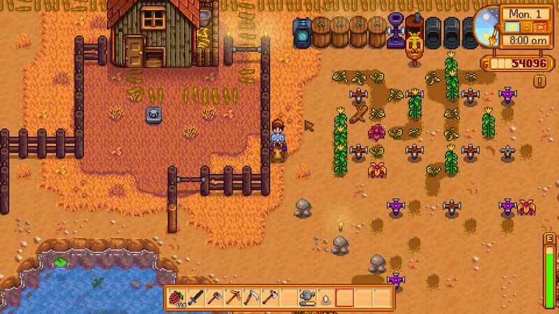

File:Riding 1.jpg
Jump to navigation
Jump to search

Size of this preview: 800 × 450 pixels. Other resolutions: 320 × 180 pixels | 1,920 × 1,080 pixels.
{kind=link}
{kind=link}
Original file (1,920 × 1,080 pixels, file size: 195 KB, MIME type: image/jpeg)
Horse bug riding fence
Licensing
| This file (or parts of it) is copyright © ConcernedApe 2016
This screenshot, texture, audio, song, or other Stardew Valley asset, or derivative of Stardew Valley assets, does not fall under the Stardew Valley Wiki's Terms of Service but is freely usable on this wiki. |
File history
Click on a date/time to view the file as it appeared at that time.
| Date/Time | Thumbnail | Dimensions | User | Comment | |
|---|---|---|---|---|---|
| current | 05:12, 6 October 2018 |  | 1,920 × 1,080 (195 KB) | EthanPowers (talk | contribs) | compressed |
| 18:55, 26 February 2017 |  | 1,920 × 1,080 (759 KB) | Lehigreck (talk | contribs) | Horse bug riding fence |
You cannot overwrite this file.
File usage
The following page uses this file:
{kind=link}